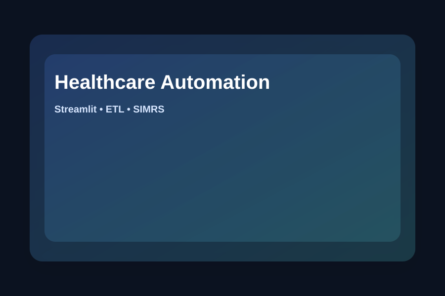

Healthcare Process Automation for DPJP Recording and BPJS Claim Support
Internship Project • Python • Streamlit • ETL
Built a Python and Streamlit-based automation system to support DPJP determination and healthcare administrative data validation at RSUD Dr. (H.C.) Ir. Soekarno Bangka Belitung.

Impact: Reduced the data retrieval process from ~3 months manual checking to 1 day automated extraction (plus validation).
Problem
Staff previously had to manually access SIMRS, input patient MRNs, and check admission dates, emergency visits, surgery records, and other administrative data one by one.
Solution
Developed an automation workflow that retrieves, validates, and structures data from PDF/Excel/SIMRS sources into standardized Excel outputs.
Dataset / Inputs
PDF files, Excel files, and SIMRS data retrieved via SOAP-based requests.
Methodology
Data ingestion → cleaning/validation → fallback handling → structured export for verification/reporting.
Tech Stack
Key Contributions
- Built Python automation and Streamlit web view.
- Integrated PDF, Excel, and SIMRS sources into one pipeline.
- Implemented fallback handling for missing/unavailable data.
- Generated structured Excel outputs used by stakeholders for verification and reporting.